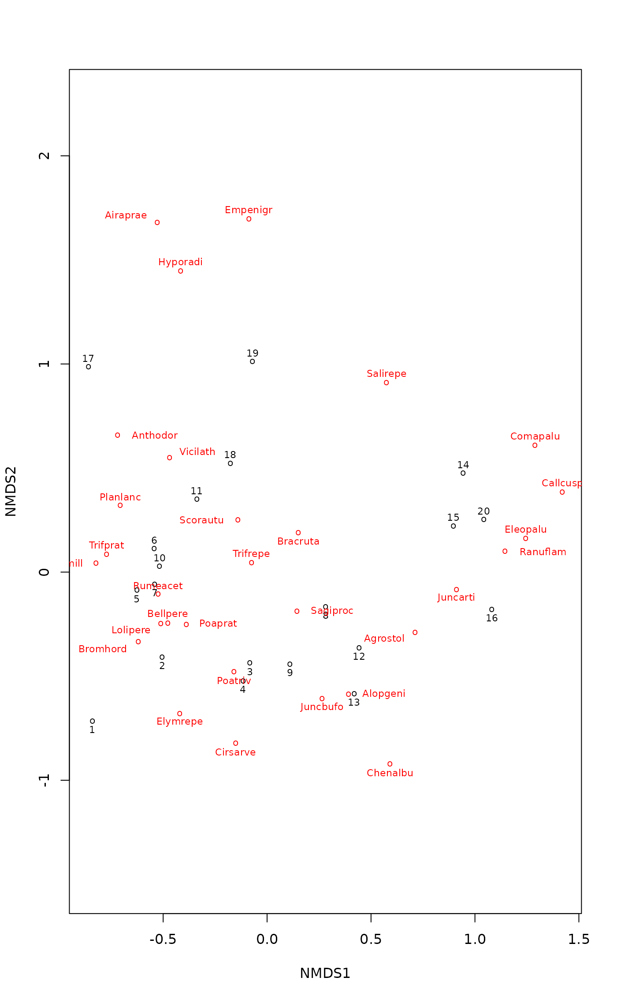

Nonmetric Multidimensional Scaling with Stable Solution from Random Starts, Axis Scaling and Species Scores
metaMDS.RdFunction metaMDS performs Nonmetric
Multidimensional Scaling (NMDS), and tries to find a stable solution
using several random starts. In addition, it standardizes the
scaling in the result, so that the configurations are easier to
interpret, and adds species scores to the site ordination. The
metaMDS function does not provide actual NMDS, but it calls
another function for the purpose. Currently monoMDS is
the default choice, and it is also possible to call the
isoMDS (MASS package).
Usage
metaMDS(comm, distance = "bray", k = 2, try = 20, trymax = 20,
engine = c("monoMDS", "isoMDS"), autotransform =TRUE,
noshare = (engine == "isoMDS"), wascores = TRUE, expand = TRUE,
trace = 1, plot = FALSE, previous.best, ...)
# S3 method for class 'metaMDS'
plot(x, display = c("sites", "species"), choices = c(1, 2),
type = "p", shrink = FALSE, cex = 0.7, ...)
# S3 method for class 'metaMDS'
points(x, display = c("sites", "species"),
choices = c(1,2), shrink = FALSE, select, cex = 0.7, ...)
# S3 method for class 'metaMDS'
text(x, display = c("sites", "species"), labels,
choices = c(1,2), shrink = FALSE, select, cex = 0.7, ...)
# S3 method for class 'metaMDS'
scores(x, display = c("sites", "species"), shrink = FALSE,
choices, tidy = FALSE, ...)
metaMDSdist(comm, distance = "bray", autotransform = TRUE,
noshare = TRUE, trace = 1, commname, zerodist = "ignore",
distfun = vegdist, ...)
metaMDSiter(dist, k = 2, try = 20, trymax = 20, trace = 1, plot = FALSE,
previous.best, engine = "monoMDS", maxit = 200,
parallel = getOption("mc.cores"), ...)
initMDS(x, k=2)
postMDS(X, dist, pc=TRUE, center=TRUE, halfchange, threshold=0.8,
nthreshold=10, plot=FALSE, ...)
metaMDSredist(object, ...)Arguments
- comm
Community data. Alternatively, dissimilarities either as a
diststructure or as a symmetric square matrix. In the latter case all other stages are skipped except random starts and centring and pc rotation of axes.- distance
Dissimilarity index used in
vegdist.- k
Number of dimensions. NB., the number of points \(n\) should be \(n > 2k + 1\), and preferably higher in global non-metric MDS, and still higher in local NMDS.
- try, trymax
Minimum and maximum numbers of random starts in search of stable solution. After
tryhas been reached, the iteration will stop when similar solutions were repeated ortrymaxwas reached.- engine
The function used for MDS. The default is to use the
monoMDSfunction in vegan, but for backward compatibility it is also possible to useisoMDSof MASS.- autotransform
Use simple heuristics for possible data transformation of typical community data (see below). If you do not have community data, you should probably set
autotransform = FALSE.Triggering of calculation step-across or extended dissimilarities with function
stepacross. The argument can be logical or a numerical value greater than zero and less than one. IfTRUE, extended dissimilarities are used always when there are no shared species between some sites, ifFALSE, they are never used. Ifnoshareis a numerical value,stepacrossis used when the proportion of site pairs with no shared species exceedsnoshare. The number of pairs with no shared species is found withno.sharedfunction, andnosharehas no effect if input data were dissimilarities instead of community data.- wascores
Calculate species scores using function
wascores.- expand
Expand weighted averages of species in
wascores.- trace
Trace the function;
trace = 2or higher will be more voluminous.- plot
Graphical tracing: plot interim results. You may want to set
par(ask = TRUE)with this option.- previous.best
Start searches from a previous solution. This can also be a
monoMDSsolution or a matrix of coordinates.- x
metaMDSresult (or a dissimilarity structure forinitMDS).- choices
Axes shown.
- type
Plot type:
"p"for points,"t"for text, and"n"for axes only.- display
Display
"sites"or"species".- shrink
Shrink back species scores if they were expanded originally.
- cex
Character expansion for plotting symbols.
- tidy
Return scores that are compatible with ggplot2: all scores are in a single
data.frame, score type is identified by factor variablecode("sites"or"species"), the names by variablelabel. These scores are incompatible with conventionalplotfunctions, but they can be used in ggplot2.- labels
Optional test to be used instead of row names.
- select
Items to be displayed. This can either be a logical vector which is
TRUEfor displayed items or a vector of indices of displayed items.- X
Configuration from multidimensional scaling.
- commname
The name of
comm: should not be given if the function is called directly.- zerodist
Handling of zero dissimilarities: either
"fail"or"add"a small positive value, or"ignore".monoMDSaccepts zero dissimilarities and the default iszerodist = "ignore", but withisoMDSyou may need to setzerodist = "add".- distfun
Dissimilarity function. Any function returning a
distobject and accepting argumentmethodcan be used (but some extra arguments may cause name conflicts).- maxit
Maximum number of iterations in the single NMDS run; passed to the
enginefunctionmonoMDSorisoMDS.- parallel
Number of parallel processes or a predefined socket cluster. If you use pre-defined socket clusters (say,
clus), you must issueclusterEvalQ(clus, library(vegan))to make available internal vegan functions. Withparallel = 1uses ordinary, non-parallel processing. The parallel processing is done with parallel package.- dist
Dissimilarity matrix used in multidimensional scaling.
- pc
Rotate to principal components.
- center
Centre the configuration.
- halfchange
Scale axes to half-change units. This defaults
TRUEwhen dissimilarities are known to have a theoretical maximum value (ceiling). Functionvegdistwill have that information in attributemaxdist, and for otherdistfunthis is interpreted in a simple test (that can fail), and the information may not available when input data are distances. IfFALSE, the ordination dissimilarities are scaled to the same range as the input dissimilarities.- threshold
Largest dissimilarity used in half-change scaling. If dissimilarities have a known (or inferred) ceiling,
thresholdis relative to that ceiling (seehalfchange).- nthreshold
Minimum number of points in half-change scaling.
- object
A result object from
metaMDS.- ...
Other parameters passed to functions. Function
metaMDSpasses all arguments to its component functionsmetaMDSdist,metaMDSiter,postMDS, and todistfunandengine.
Details
Non-metric Multidimensional Scaling (NMDS) is commonly
regarded as the most robust unconstrained ordination method in
community ecology (Minchin 1987). Function metaMDS is a
wrapper function that calls several other functions to combine
Minchin's (1987) recommendations into one command. The complete
steps in metaMDS are:
Transformation: If the data values are larger than common abundance class scales, the function performs a Wisconsin double standardization (
wisconsin). If the values look very large, the function also performssqrttransformation. Both of these standardizations are generally found to improve the results. However, the limits are completely arbitrary (at present, data maximum 50 triggerssqrtand \(>9\) triggerswisconsin). If you want to have a full control of the analysis, you should setautotransform = FALSEand standardize and transform data independently. Theautotransformis intended for community data, and for other data types, you should setautotransform = FALSE. This step is perfomed usingmetaMDSdist, and the step is skipped if input were dissimilarities.Choice of dissimilarity: For a good result, you should use dissimilarity indices that have a good rank order relation to ordering sites along gradients (Faith et al. 1987). The default is Bray-Curtis dissimilarity, because it often is the test winner. However, any other dissimilarity index in
vegdistcan be used. Functionrankindexcan be used for finding the test winner for you data and gradients. The default choice may be bad if you analyse other than community data, and you should probably select an appropriate index using argumentdistance. This step is performed usingmetaMDSdist, and the step is skipped if input were dissimilarities.Step-across dissimilarities: Ordination may be very difficult if a large proportion of sites have no shared species. In this case, the results may be improved with
stepacrossdissimilarities, or flexible shortest paths among all sites. The default NMDSengineismonoMDSwhich is able to break tied values at the maximum dissimilarity, and this often is sufficient to handle cases with no shared species, and therefore the default is not to usestepacrosswithmonoMDS. FunctionisoMDSdoes not handle tied values adequately, and therefore the default is to usestepacrossalways when there are sites with no shared species withengine = "isoMDS". Thestepacrossis triggered by optionnoshare. If you do not like manipulation of original distances, you should setnoshare = FALSE. This step is skipped if input data were dissimilarities instead of community data. This step is performed usingmetaMDSdist, and the step is skipped always when input were dissimilarities.NMDS with random starts: NMDS easily gets trapped into local optima, and you must start NMDS several times from random starts to be confident that you have found the global solution. The strategy in
metaMDSis to first run NMDS starting with the metric scaling (cmdscalewhich usually finds a good solution but often close to a local optimum), or use theprevious.bestsolution if supplied, and take its solution as the standard (Run 0). ThenmetaMDSstarts NMDS from several random starts (minimum number is given bytryand maximum number bytrymax). These random starts are generated byinitMDS. If a solution is better (has a lower stress) than the previous standard, it is taken as the new standard. If the solution is better or close to a standard,metaMDScompares two solutions using Procrustes analysis (functionprocrusteswith optionsymmetric = TRUE). If the solutions are very similar in their Procrustesrmseand the largest residual is very small, the solutions are regarded as repeated and the better one is taken as the new standard. The conditions are stringent, and you may have found good and relatively similar solutions although the function is not yet satisfied. Settingtrace = TRUEwill monitor the final stresses, andplot = TRUEwill display Procrustes overlay plots from each comparison. This step is performed usingmetaMDSiter. This is the first step performed if input data (comm) were dissimilarities. Random starts can be run with parallel processing (argumentparallel).Scaling of the results:
metaMDSwill runpostMDSfor the final result. FunctionpostMDSprovides the following ways of “fixing” the indeterminacy of scaling and orientation of axes in NMDS: Centring moves the origin to the average of the axes; Principal components rotate the configuration so that the variance of points is maximized on first dimension (with functionMDSrotateyou can alternatively rotate the configuration so that the first axis is parallel to an environmental variable); Half-change scaling scales the configuration so that one unit means halving of community similarity from replicate similarity. Half-change scaling is based on closer dissimilarities where the relation between ordination distance and community dissimilarity is rather linear (the limit is set by argumentthreshold). If there are enough points below this threshold (controlled by the parameternthreshold), dissimilarities are regressed on distances. The intercept of this regression is taken as the replicate dissimilarity, and half-change is the distance where similarity halves according to linear regression. Obviously the method is applicable only for dissimilarity indices scaled to \(0 \ldots 1\), such as Kulczynski, Bray-Curtis and Canberra indices. If half-change scaling is not used, the ordination is scaled to the same range as the original dissimilarities. Half-change scaling is skipped by default if input were dissimilarities, but can be turned on with argumenthalfchange = TRUE. NB., The PC rotation only changes the directions of reference axes, and it does not influence the configuration or solution in general.Species scores: Function adds the species scores to the final solution as weighted averages using function
wascoreswith given value of parameterexpand. The expansion of weighted averages can be undone withshrink = TRUEinplotorscoresfunctions, and the calculation of species scores can be suppressed withwascores = FALSE. This step is skipped if input were dissimilarities and community data were unavailable. However, the species scores can be added or replaced withsppscores.
Results Could Not Be Repeated
Non-linear optimization is a hard task, and the best possible solution
(“global optimum”) may not be found from a random starting
configuration. Most software solve this by starting from the result of
metric scaling (cmdscale). This will probably give a
good result, but not necessarily the “global
optimum”. Vegan does the same, but metaMDS tries to
verify or improve this first solution (“try 0”) using several
random starts and seeing if the result can be repeated or improved and
the improved solution repeated. If this does not succeed, you get a
message that the result could not be repeated. However, the result
will be at least as good as the usual standard strategy of starting
from metric scaling or it may be improved. You may not need to do
anything after such a message, but you can be satisfied with the
result. If you want to be sure that you probably have a “global
optimum” you may try the following instructions.
With default engine = "monoMDS" the function will
tabulate the stopping criteria used, so that you can see which
criterion should be made more stringent. The criteria can be given
as arguments to metaMDS and their current values are
described in monoMDS. In particular, if you reach
the maximum number of iterations, you should increase the value of
maxit. You may ask for a larger number of random starts
without losing the old ones giving the previous solution in
argument previous.best.
In addition to slack convergence criteria and too low number
of random starts, wrong number of dimensions (argument k)
is the most common reason for not being able to repeat similar
solutions. NMDS is usually run with a low number dimensions
(k=2 or k=3), and for complex data increasing
k by one may help. If you run NMDS with much higher number
of dimensions (say, k=10 or more), you should reconsider
what you are doing and drastically reduce k. For very
heterogeneous data sets with partial disjunctions, it may help to
set stepacross, but for most data sets the default
weakties = TRUE is sufficient.
Please note that you can give all arguments of other
metaMDS* functions and NMDS engine (default
monoMDS) in your metaMDS command,and you
should check documentation of these functions for details.
Common Wrong Claims
NMDS is often misunderstood and wrong claims of its properties are common on the Web and even in publications. It is often claimed that the NMDS configuration is non-metric which means that you cannot fit environmental variables or species onto that space. This is a false statement. In fact, the result configuration of NMDS is metric, and it can be used like any other ordination result. In NMDS the rank orders of Euclidean distances among points in ordination have a non-metric monotone relationship to any observed dissimilarities. The transfer function from observed dissimilarities to ordination distances is non-metric (Kruskal 1964a, 1964b), but the ordination result configuration is metric and observed dissimilarities can be of any kind (metric or non-metric).
The ordination configuration is usually rotated to principal
components in metaMDS. The rotation is performed after
finding the result, and it only changes the direction of the
reference axes. The only important feature in the NMDS solution are
the ordination distances, and these do not change in
rotation. Similarly, the rank order of distances does not change in
uniform scaling or centring of configuration of points. You can also
rotate the NMDS solution to external environmental variables with
MDSrotate. This rotation will also only change the
orientation of axes, but will not change the configuration of points
or distances between points in ordination space.
Function stressplot displays the method graphically:
it plots the observed dissimilarities against distances in
ordination space, and also shows the non-metric monotone
regression.
Value
Function metaMDS returns an object of class
metaMDS. The final site ordination is stored in the item
points, and species ordination in the item species,
and the stress in item stress (NB, the scaling of the stress
depends on the engine: isoMDS uses
percents, and monoMDS proportions in the range \(0
\ldots 1\)). The other items store the information on the steps taken
and the items returned by the engine function. The object has
print, plot, points and text methods.
Functions metaMDSdist and metaMDSredist return
vegdist objects. Function initMDS returns a
random configuration which is intended to be used within
isoMDS only. Functions metaMDSiter and
postMDS returns the result of NMDS with updated
configuration.
References
Faith, D. P, Minchin, P. R. and Belbin, L. (1987). Compositional dissimilarity as a robust measure of ecological distance. Vegetatio 69, 57–68.
Kruskal, J.B. (1964a). Multidimensional scaling by optimizing goodness-of-fit to a nonmetric hypothesis. Psychometrika 29, 1–28.
Kruskal, J.B. (1964b). Nonmetric multidimensional scaling: a numerical method. Psychometrika 29, 115–129.
Minchin, P.R. (1987). An evaluation of relative robustness of techniques for ecological ordinations. Vegetatio 69, 89–107.
Note
Function metaMDS is a simple wrapper for an NMDS engine
(either monoMDS or isoMDS) and
some support functions (metaMDSdist,
stepacross, metaMDSiter, initMDS,
postMDS, wascores). You can call these support
functions separately for better control of results. Data
transformation, dissimilarities and possible
stepacross are made in function metaMDSdist
which returns a dissimilarity result. Iterative search (with
starting values from initMDS with monoMDS) is
made in metaMDSiter. Processing of result configuration is
done in postMDS, and species scores added by
wascores. If you want to be more certain of reaching
a global solution, you can compare results from several independent
runs. You can also continue analysis from previous results or from
your own configuration. Function may not save the used
dissimilarity matrix (monoMDS does), but
metaMDSredist tries to reconstruct the used dissimilarities
with original data transformation and possible
stepacross.
The metaMDS function was designed to be used with community
data. If you have other type of data, you should probably set some
arguments to non-default values: probably at least wascores,
autotransform and noshare should be FALSE. If
you have negative data entries, metaMDS will set the previous
to FALSE with a warning.
Warning
metaMDS uses monoMDS as its
NMDS engine from vegan version 2.0-0, when it replaced
the isoMDS function. You can set argument
engine to select the old engine.
See also
monoMDS (and isoMDS),
decostand, wisconsin,
vegdist, rankindex, stepacross,
procrustes, wascores, sppscores,
MDSrotate, ordiplot, stressplot.
Examples
## The recommended way of running NMDS (Minchin 1987)
##
data(dune)
## IGNORE_RDIFF_BEGIN
## Global NMDS using monoMDS
sol <- metaMDS(dune)
#> Run 0 stress 0.1192678
#> Run 1 stress 0.3016052
#> Run 2 stress 0.1192678
#> ... New best solution
#> ... Procrustes: rmse 9.804396e-06 max resid 2.993113e-05
#> ... Similar to previous best
#> Run 3 stress 0.1183186
#> ... New best solution
#> ... Procrustes: rmse 0.02027462 max resid 0.06499128
#> Run 4 stress 0.1192679
#> Run 5 stress 0.1183186
#> ... Procrustes: rmse 3.964007e-06 max resid 1.2573e-05
#> ... Similar to previous best
#> Run 6 stress 0.1192679
#> Run 7 stress 0.1183186
#> ... Procrustes: rmse 6.675204e-06 max resid 1.892118e-05
#> ... Similar to previous best
#> Run 8 stress 0.1192678
#> Run 9 stress 0.1183186
#> ... Procrustes: rmse 2.31839e-06 max resid 6.973206e-06
#> ... Similar to previous best
#> Run 10 stress 0.1889645
#> Run 11 stress 0.1183186
#> ... Procrustes: rmse 4.550156e-06 max resid 1.4618e-05
#> ... Similar to previous best
#> Run 12 stress 0.1192678
#> Run 13 stress 0.1192678
#> Run 14 stress 0.1192678
#> Run 15 stress 0.1192678
#> Run 16 stress 0.1192679
#> Run 17 stress 0.1808912
#> Run 18 stress 0.1183186
#> ... Procrustes: rmse 1.954831e-05 max resid 6.115607e-05
#> ... Similar to previous best
#> Run 19 stress 0.1808911
#> Run 20 stress 0.1183186
#> ... New best solution
#> ... Procrustes: rmse 1.3197e-06 max resid 3.321941e-06
#> ... Similar to previous best
#> *** Best solution repeated 1 times
sol
#>
#> Call:
#> metaMDS(comm = dune)
#>
#> global Multidimensional Scaling using monoMDS
#>
#> Data: dune
#> Distance: bray
#>
#> Dimensions: 2
#> Stress: 0.1183186
#> Stress type 1, weak ties
#> Best solution was repeated 1 time in 20 tries
#> The best solution was from try 20 (random start)
#> Scaling: centring, PC rotation, halfchange scaling
#> Species: expanded scores based on ‘dune’
#>
plot(sol, type="t")

## Start from previous best solution
sol <- metaMDS(dune, previous.best = sol)
#> Starting from 2-dimensional configuration
#> Run 0 stress 0.1183186
#> Run 1 stress 0.1183186
#> ... Procrustes: rmse 5.279158e-06 max resid 1.797511e-05
#> ... Similar to previous best
#> Run 2 stress 0.1183186
#> ... Procrustes: rmse 2.460953e-06 max resid 5.877957e-06
#> ... Similar to previous best
#> Run 3 stress 0.1192678
#> Run 4 stress 0.1886532
#> Run 5 stress 0.1192678
#> Run 6 stress 0.1808911
#> Run 7 stress 0.1183186
#> ... Procrustes: rmse 7.828309e-06 max resid 2.405585e-05
#> ... Similar to previous best
#> Run 8 stress 0.1183186
#> ... Procrustes: rmse 6.32253e-06 max resid 2.037397e-05
#> ... Similar to previous best
#> Run 9 stress 0.1808911
#> Run 10 stress 0.1183186
#> ... Procrustes: rmse 1.809694e-06 max resid 5.978548e-06
#> ... Similar to previous best
#> Run 11 stress 0.1901491
#> Run 12 stress 0.1183186
#> ... Procrustes: rmse 1.546268e-05 max resid 4.957148e-05
#> ... Similar to previous best
#> Run 13 stress 0.1812932
#> Run 14 stress 0.1183186
#> ... Procrustes: rmse 5.112711e-06 max resid 1.098817e-05
#> ... Similar to previous best
#> Run 15 stress 0.1183186
#> ... Procrustes: rmse 6.246131e-06 max resid 2.000824e-05
#> ... Similar to previous best
#> Run 16 stress 0.1192679
#> Run 17 stress 0.1192678
#> Run 18 stress 0.1886532
#> Run 19 stress 0.1192679
#> Run 20 stress 0.1192678
#> *** Best solution repeated 9 times
## Local NMDS and stress 2 of monoMDS
sol2 <- metaMDS(dune, model = "local", stress=2)
#> Run 0 stress 0.1928478
#> Run 1 stress 0.1928482
#> ... Procrustes: rmse 0.0006537695 max resid 0.001899655
#> ... Similar to previous best
#> Run 2 stress 0.1928476
#> ... New best solution
#> ... Procrustes: rmse 0.0004471422 max resid 0.001294366
#> ... Similar to previous best
#> Run 3 stress 0.1928475
#> ... New best solution
#> ... Procrustes: rmse 0.0002885977 max resid 0.0008320155
#> ... Similar to previous best
#> Run 4 stress 0.1928475
#> ... New best solution
#> ... Procrustes: rmse 5.59458e-05 max resid 0.0001616763
#> ... Similar to previous best
#> Run 5 stress 0.1928475
#> ... Procrustes: rmse 4.864069e-05 max resid 0.0001571056
#> ... Similar to previous best
#> Run 6 stress 0.1928477
#> ... Procrustes: rmse 0.0002420844 max resid 0.0006909829
#> ... Similar to previous best
#> Run 7 stress 0.1928475
#> ... Procrustes: rmse 0.0001346077 max resid 0.0003887498
#> ... Similar to previous best
#> Run 8 stress 0.1928475
#> ... Procrustes: rmse 0.0001625818 max resid 0.0004729866
#> ... Similar to previous best
#> Run 9 stress 0.1928475
#> ... Procrustes: rmse 8.000053e-05 max resid 0.0002277773
#> ... Similar to previous best
#> Run 10 stress 0.192849
#> ... Procrustes: rmse 0.0006301494 max resid 0.001813666
#> ... Similar to previous best
#> Run 11 stress 0.1928475
#> ... Procrustes: rmse 0.0001014964 max resid 0.0002751379
#> ... Similar to previous best
#> Run 12 stress 0.192848
#> ... Procrustes: rmse 0.0002964116 max resid 0.0008527077
#> ... Similar to previous best
#> Run 13 stress 0.1928475
#> ... New best solution
#> ... Procrustes: rmse 6.461832e-05 max resid 0.0001901839
#> ... Similar to previous best
#> Run 14 stress 0.1928482
#> ... Procrustes: rmse 0.0003439501 max resid 0.001017732
#> ... Similar to previous best
#> Run 15 stress 0.1928479
#> ... Procrustes: rmse 0.0002821687 max resid 0.0008172892
#> ... Similar to previous best
#> Run 16 stress 0.1928475
#> ... New best solution
#> ... Procrustes: rmse 3.13617e-05 max resid 8.909983e-05
#> ... Similar to previous best
#> Run 17 stress 0.1928475
#> ... Procrustes: rmse 4.709197e-05 max resid 0.0001417594
#> ... Similar to previous best
#> Run 18 stress 0.1928477
#> ... Procrustes: rmse 0.0002414341 max resid 0.0007100825
#> ... Similar to previous best
#> Run 19 stress 0.1928479
#> ... Procrustes: rmse 0.0003023992 max resid 0.0008897382
#> ... Similar to previous best
#> Run 20 stress 0.1928476
#> ... Procrustes: rmse 0.0002063278 max resid 0.0006048887
#> ... Similar to previous best
#> *** Best solution repeated 5 times
sol2
#>
#> Call:
#> metaMDS(comm = dune, model = "local", stress = 2)
#>
#> local Multidimensional Scaling using monoMDS
#>
#> Data: dune
#> Distance: bray
#>
#> Dimensions: 2
#> Stress: 0.1928475
#> Stress type 2, weak ties
#> Best solution was repeated 5 times in 20 tries
#> The best solution was from try 16 (random start)
#> Scaling: centring, PC rotation, halfchange scaling
#> Species: expanded scores based on ‘dune’
#>
## Use Arrhenius exponent 'z' as a binary dissimilarity measure
sol <- metaMDS(dune, distfun = betadiver, distance = "z")
#> Run 0 stress 0.1067169
#> Run 1 stress 0.1073148
#> Run 2 stress 0.1073148
#> Run 3 stress 0.1073148
#> Run 4 stress 0.1073148
#> Run 5 stress 0.1073148
#> Run 6 stress 0.1067169
#> ... New best solution
#> ... Procrustes: rmse 2.925049e-06 max resid 7.049929e-06
#> ... Similar to previous best
#> Run 7 stress 0.1069781
#> ... Procrustes: rmse 0.006690411 max resid 0.02349817
#> Run 8 stress 0.1067169
#> ... Procrustes: rmse 6.432458e-06 max resid 1.886945e-05
#> ... Similar to previous best
#> Run 9 stress 0.1069786
#> ... Procrustes: rmse 0.006774522 max resid 0.02386629
#> Run 10 stress 0.1067169
#> ... Procrustes: rmse 2.346391e-06 max resid 5.306599e-06
#> ... Similar to previous best
#> Run 11 stress 0.1067169
#> ... Procrustes: rmse 2.816635e-06 max resid 7.563776e-06
#> ... Similar to previous best
#> Run 12 stress 0.1069784
#> ... Procrustes: rmse 0.006735205 max resid 0.02369698
#> Run 13 stress 0.1067169
#> ... Procrustes: rmse 3.36442e-06 max resid 1.127286e-05
#> ... Similar to previous best
#> Run 14 stress 0.2355185
#> Run 15 stress 0.1644741
#> Run 16 stress 0.1067169
#> ... Procrustes: rmse 8.389288e-06 max resid 2.174836e-05
#> ... Similar to previous best
#> Run 17 stress 0.1073148
#> Run 18 stress 0.1067169
#> ... Procrustes: rmse 5.169725e-06 max resid 1.633663e-05
#> ... Similar to previous best
#> Run 19 stress 0.1067169
#> ... Procrustes: rmse 3.667758e-06 max resid 9.091241e-06
#> ... Similar to previous best
#> Run 20 stress 0.1073148
#> *** Best solution repeated 8 times
sol
#>
#> Call:
#> metaMDS(comm = dune, distance = "z", distfun = betadiver)
#>
#> global Multidimensional Scaling using monoMDS
#>
#> Data: dune
#> Distance: beta.z
#>
#> Dimensions: 2
#> Stress: 0.1067169
#> Stress type 1, weak ties
#> Best solution was repeated 8 times in 20 tries
#> The best solution was from try 6 (random start)
#> Scaling: centring, PC rotation, halfchange scaling
#> Species: expanded scores based on ‘dune’
#>
## IGNORE_RDIFF_END